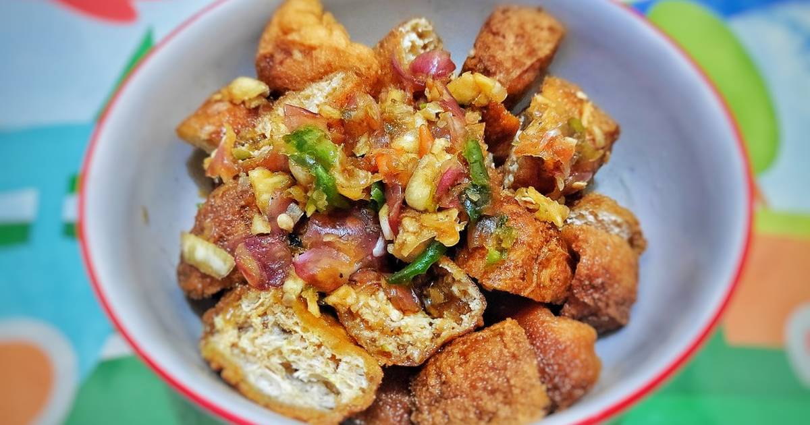

Tahu Sumedang Gejrot

Deskripsi
Tahu Sumedang Gejrot adalah makanan tahu sumedang dengan sedikit modifikasi. Makanan ini berasal dari jawa barat yang terbuat dari bahan dasar tahu.
Bahan-bahan
-
15 butir Tahu Sumedang
-
1 1/2 bulatan gula merah
-
1 sdm kecap manis
-
Asam Jawa(bisa skip jika tidak ada atau tidak terlalu suka asam)
-
Air
-
2 siung Bawang Putih yang ukuran besar
-
5 siung Bawang Merah ukuran sedang
-
5 Cabe Rawit Hijau
-
1 Cabe Rawit Merah
-
Sejumput garam (jika menggunakan tahu selain Tahu Sumedang)
Langkah-langkah
-
Masak gula merah dan kecap. Kemudian tambah dengan asam jawa yang sudah dicampur dengan air 25-30 sdm.
-
Uleg bahan kasar, karena Tahu Sumedang sudah asin maka tidak perlu ditambahkan garam
-
Campur cairan yang sudah di masak dengan bahan ulek kasar
-
Paralel dengan penyiapan bahan siraman di atas, goreng kembali Tahu Sumedang agar garing 😊. Kemudian potong-potong menjadi 2 bagian
-
Siram Tahu dengan bahan siraman dan Tahu (Sumedang) Gejrot siap di santap 🤤